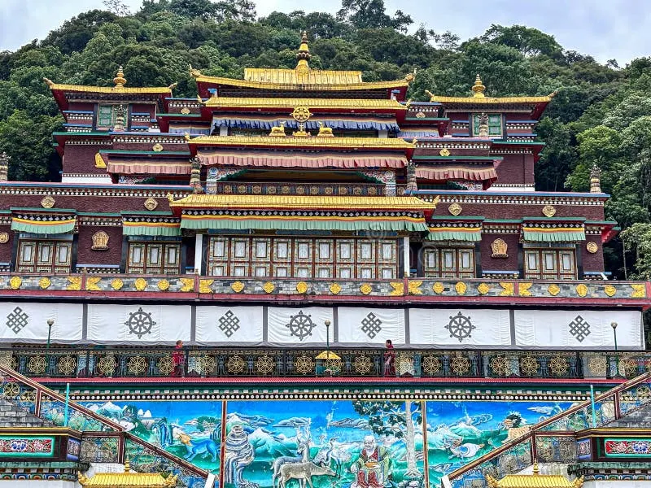
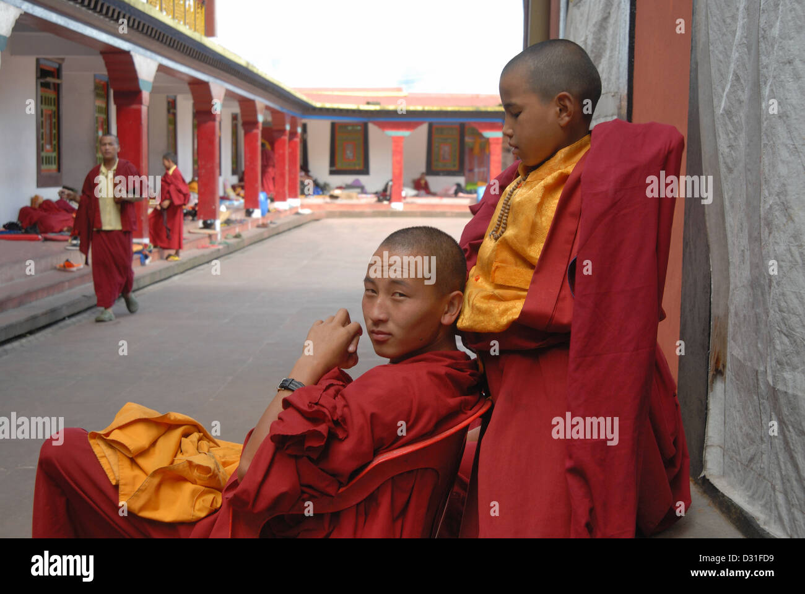
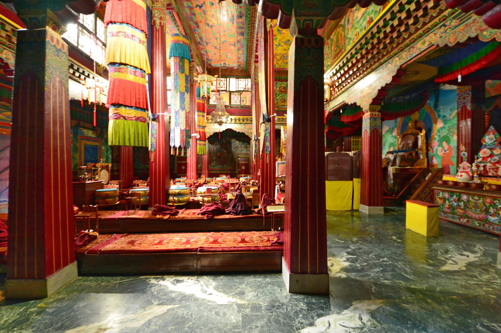

Rumtek Monastery is situated about 23–24 km from Gangtok amidst lush hills and scenic mountain landscapes. Originally constructed in the 18th century by the 12th Karmapa, it was rebuilt in the 1960s by the 16th Karmapa after fleeing Tibet, replicating the original Tsurphu Monastery.
Photo Gallery




Key Features
- Largest monastery in Sikkim, showcasing outstanding Tibetan architecture and serving as a global center for Karma Kagyu studies.
- Houses rare Buddhist religious art objects and a golden stupa containing relics of the 16th Karmapa.
- Includes the Karma Shri Nalanda Institute for Higher Buddhist Studies, promoting advanced Buddhist scholarship.
- Surrounded by tranquil natural beauty and located near the Nehru Botanical Garden.
Controversies & Events
The monastery has been at the heart of the Karmapa controversy, with rival factions disputing its stewardship. Indian security forces have intervened at times to prevent violence between supporters of different candidates for the 17th Karmapa.
Tourist & Travel Information
Rumtek is accessible via road, taxi, and public transport from Gangtok. Travelers can arrive by air to Pakyong or Bagdogra, or rail to Siliguri and New Jalpaiguri, followed by a scenic drive. The surrounding area offers sightseeing, monastery tours, trekking, and peaceful stays in rural lodges or resorts.